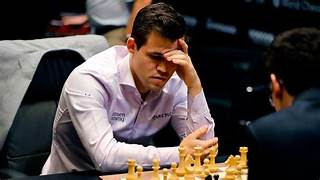

მსოფლიოში ძალიან ბევრი სპორტი არსებობს
ზოგიერტი სპორტი მოითხოვს ფიზიკურ შესაძლებლობებს და მონაცემებს,
ხოლო ზოგიც გონებრივ შესაძლებლობებს
მაგალითად:ფეხბუთი,კალათბურთი,ფრენბურთი,ჭიდაობა,მკლავჭიდი და ა.შ
დამოკიდებულია სპორტსმენის ფიზიკურ შესაძლებლობებსა და აღნაგობაზე,
ხოლო ჭადრაკი,პოკერი დამოკიდებულია ადამიანის გონებრივ შესაძლებლობებზე
ჩემი საყვარელი სპორტი გახლავთ კალათბურთი
ჩემი საყვარელი გუნდია "Milwaukee Bucks",
რომელიც ამერიკული გუნდია,
ხოლო საყვარელი მოთამაშე "Giannis Antetokounmpo"-ა,
რომელიც წარმოშობით ბერძენია
ეს იყო ინფორმაცია ჩემი საყვარელი სპორტის შესახებ